Multi-Scale Heterogeneous Graph-Based High-Resolution Air Quality Inference:
Comparison of Latent Fusion and Explicit Scale Decomposition
정필수1), 윤희영2)
1)(주)건화 환경평가부 · 2)안양대학교 환경에너지공학과
제69회 한국대기환경학회 정기학술대회2026.10.30|대구 EXCO
Session 5C 대기환경모델링·AI|5C1|09:00–09:20
관측은 점, 추론 대상은 면 — 농도장의 다중 규모 중첩 구조
이 연구의 핵심 과제두 아키텍처가 함께 다루는 과제후속 활용 분야 15개 과제 = 2024–2026 리뷰 여러 편을 연구 목적으로 다시 묶은 분류
참고문헌과제 분류Wang et al. (2026) npj Clim. Atmos. Sci. · Dai et al. (2026) Atmos. Environ. X 29, 100435 Garcia et al. (2025) Artif. Intell. Rev. 58(9), 275 · Choi et al. (2025) 한국대기환경학회지 41(2), 179–198 Holzinger et al. (2026) Artif. Intell. Rev. 이 연구정필수 외 (2026) 한국대기환경학회지 42(2), 342–368
희소 측정소와 불완전한 CTM 배경장 조건에서 측정소 밖 1 km 농도장을 추론하는 두 결합 구조의 가능성
지상 관측 커버리지 · 1 km 격자 기준
자료동화CTM 배경장을 관측자료로 보정해 분석장을 만들듯이,
AMR-HGNCTM 배경장을 다변수 입력 · 관측자료와 결합해 1 km 농도장으로 보정하는
그래프 기반 비선형 자료동화형 초해상화
다변수 입력 — 기상 · 배출 · 지형 · 토지피복 · 관측 이력 | 1 km = 출력 격자 간격, 검증된 유효해상도와 별개
OI — Optimal Interpolation(최적 내삽) · 3D-Var — Three-Dimensional Variational data assimilation(3차원 변분 자료동화)
| 자료동화 분석 | Arch 1 · E2E | Arch 2 · Two-Stage | |
|---|---|---|---|
| 배경장 xb | CTM 예측장 | GEOS-CF 직접 — 선형 보정 α · c + β | Stage 1 — CMAQ-DA(자료동화 재분석) 지식증류 |
| 관측 · 전파 | 동시각 관측 · H — B 의 상관 길이 · 국지화 | 측정소 관측 시계열 → 격자 메시지 전달 — 거리 감쇠 σ 30 km · 80 km 이내 | |
| 보정 연산 | 선형 이득 K — 시각마다 최적화 · 갱신 | 학습된 비선형 그래프 연산 — 1회 학습 후 시각별 순전파 | |
| 산출 | 모델 격자 분석장 + 분석 오차 공분산 | 1 km 지표 농도장 — 분석 오차 미산출 | |
AMR-HGNAdaptive Multi-Resolution Heterogeneous Graph Network적응형 다중 해상도 이종 그래프 신경망 — 두 결합 구조
다중 규모 정보를 하나의 잠재 공간에서 섞을 것인가,
배경과 국지를 나누어 쌓을 것인가
AMR-HGNAdaptive Multi-Resolution Heterogeneous Graph Network적응형 다중 해상도 이종 그래프 신경망 — 두 결합 구조
Arch 1End-to-End — 공통 잠재 공간 융합
Arch 2Two-Stage — 5 km 배경장 emulator + 1 km 잔차
다중 규모 중첩에서 출발해 두 구조의 결합 · 학습 방식을 차례로 보고, 마지막에 나란히 견준다.
개념 시각화 — 농도장 · 배경장 · 잔차 · 학습 곡선은 모델 출력이 아니다
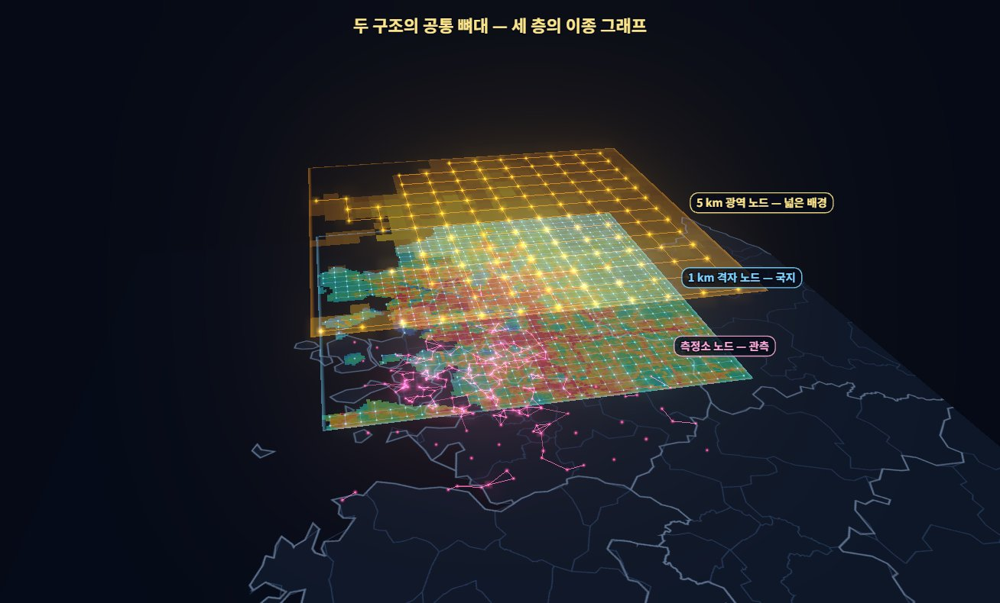
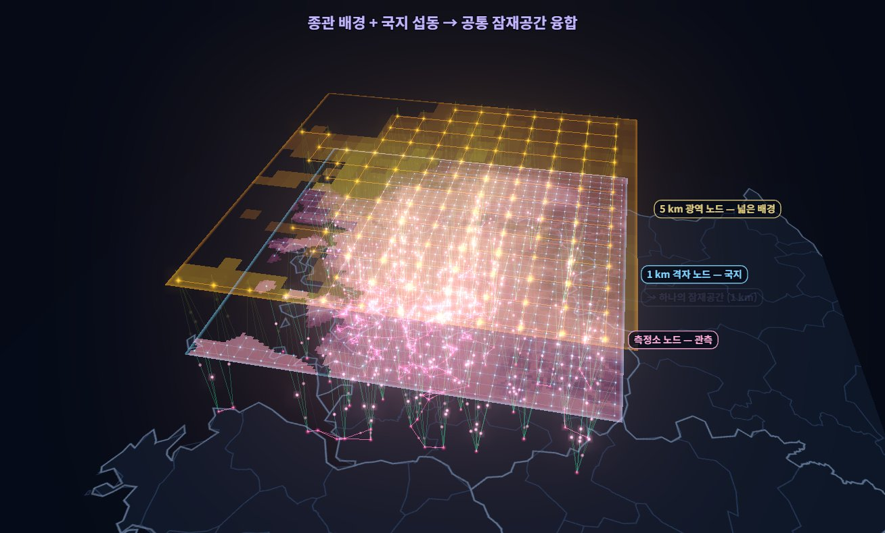
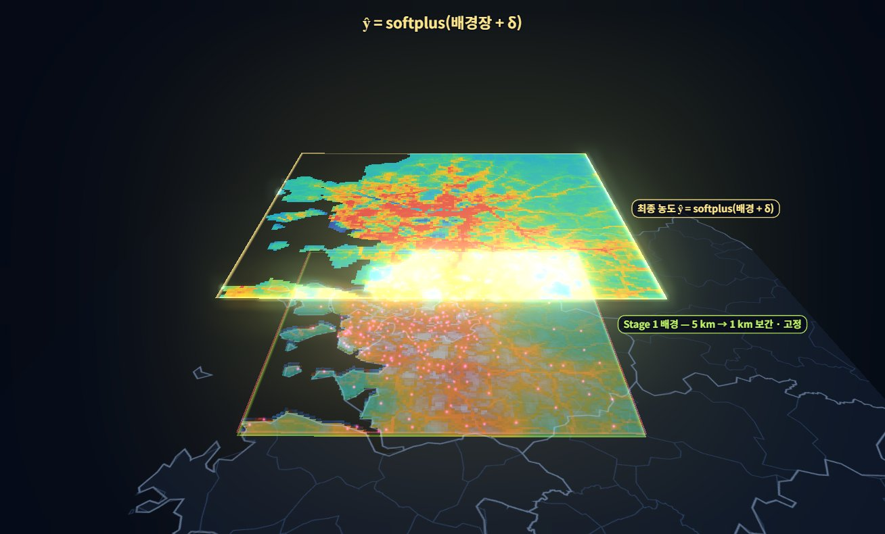
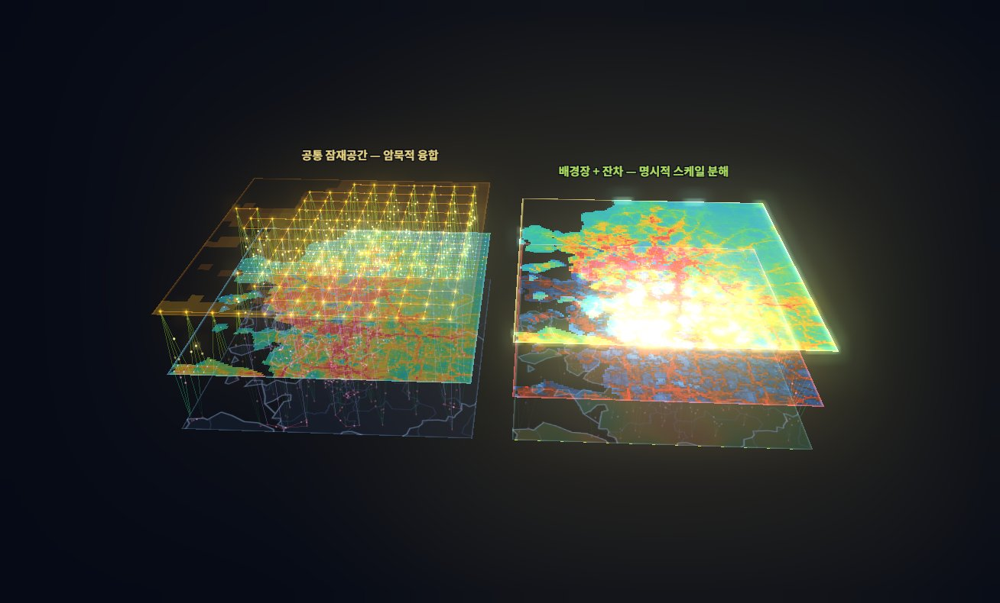
관측 부재 지역의 검증 체계 — 다수 약한 증거의 방향적 수렴 평가동일 관측 자료를 공유하는 지표의 반복 산출 ≠ 독립 증거의 증가
은닉 관측의 재현 여부
시간 독립 학습 미사용 연도(2023) 평가, 공간 독립 군집 기반 5-fold 측정소 홀드아웃
범위 — 측정소 분포와 유사한 위치의 정확도, 산지 · 해양 · 저배출 지역 미보장
물질 간 관계 · 공간 구조의 모순 여부
지표 산화제 Ox = O₃ + NO₂ 분배 · NOx – Ox 관계 · 도메인 경계 인공 구조
범위 — 과학적 개연성 · 특정 실패 양상 배제, Ox ≠ 상시 보존량
타 관측 체계와의 양립 여부
위성 연직 칼럼 GEMS · TROPOMI 공간 패턴 · HCHO / NO₂ 칼럼비(FNR) 레짐 맥락
범위 — 칼럼 ≠ 지표 농도, 공간 순위와 방향적 일관성 기준
이 발표의 공간 홀드아웃 R²(14쪽 · 부록 3) = 전 측정소로 학습한 모델 하나에서 추론 단계에만 fold 측정소의 관측 입력을 가린 결과 — 학습 단계 가림은 15쪽
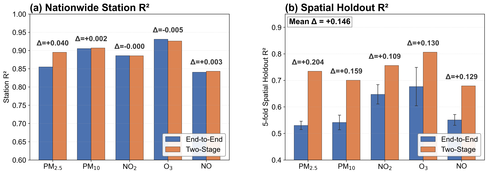
| 방법 | PM₂.₅ | PM₁₀ | NO₂ | O₃ | NO | 5종 평균 |
|---|---|---|---|---|---|---|
| IDW관측 역거리 | 0.816 | 0.875 | 0.662 | 0.819 | 0.492 | 0.733 |
| 크리깅관측 | 0.819 | 0.879 | 0.682 | 0.828 | 0.509 | 0.744 |
| 크리깅 + 배경장Stage 1 위 잔차 | 0.819 | 0.870 | 0.723 | 0.816 | 0.517 | 0.749 |
| GBM관측 요약 + 예보장 | 0.796 | 0.821 | 0.709 | 0.830 | 0.461 | 0.723 |
| Two-StageStage 2 · v2 | 0.732 | 0.663 | 0.695 | 0.766 | 0.473 | 0.666 |
같은 북부 · 2023 · 5종 평균이지만 모델 판 · 지표가 달라 가림 방식만 바꾼 짝비교는 아님 — 학습에서도 가리면 더 엄격한 시험이 됨을 보이는 참고 대비
성능 향상 여지 — 층을 바꾸지 않고 관측 배선만 고쳐도 격차 대부분이 줄었다 → 남은 PM · O₃ 격차는 보간 위에 보정을 더하는 구조로 후속 시험, 개선 여지가 열려 있음
다른 방향 — 배경장을 화학수송모델 대신 크리깅 분석장으로 두고 학습이 남은 잔차만 맞추는 구성, 크리깅 기준장 위에 다중 규모 잔차를 학습해 30 m PM₂.₅ 를 추정한 선행 연구가 있다 — 이 비교에서 크리깅 + 배경장이 가장 강했던 만큼 더 효과적일 가능성(후속 시험)Liang et al. (2023) Environmental Pollution 331, 121832
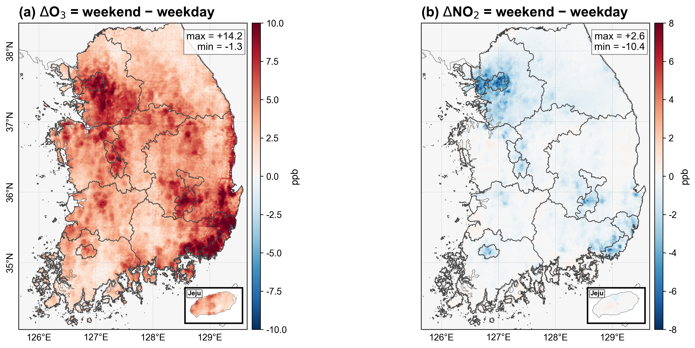
E2E1 km 주말 − 주중 차이 ΔO₃ · ΔNO₂
HCHO — VOC 산화 부산물, NO₂ — NOx 지표 (GEMS · TROPOMI L2)
Martin et al. (2004) Geophysical Research Letters 31(6), 2004GL019416 · Duncan et al. (2010) Atmospheric Environment 44(18), 2213-2223 · Jin et al. (2020) Environ. Sci. Technol. 54(11), 6518-6529
Souri et al. (2020) Atmospheric Environment 224, 117341 · Souri et al. (2023) Atmos. Chem. Phys. 23(3), 1963-1986
Ox = NO₂ + O₃ — NO + O₃ ⇌ NO₂ + O₂ 광화학 정상상태의 근사 보존량
Clapp (2001) Atmospheric Environment 35(36), 6391-6405 · García-Yee et al. (2018) Atmospheric Environment 177, 100-110
세 층위FNR 칼럼 민감도 대리, r 지표 분배, 실제 민감도 ΔO₃/ΔNOx(CTM 배출 섭동) — 이 발표는 FNR · r 로 화학 정합성을 평가, 배출 민감도 진단 아님
판정역상관은 광역 방향성 정합의 보조 근거 — NO₂ 공유(컬럼/지표)에 의한 구조적 역상관 가능성, 1 km 정확도/배출 민감도 입증 아님
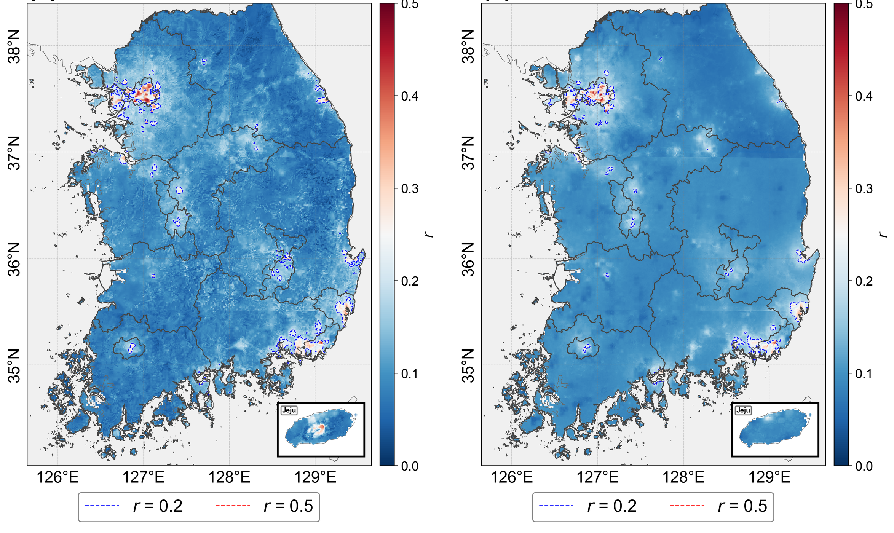
| E2E | Two-Stage | |
|---|---|---|
| O₃ 우세 면적 (r < 0.2) | 97.21 % | 97.97 % |
| 도시 격자 중 fresh 비율 | 26.36 % | 23.90 % |
| 산림 격자 중 배경 비율 | 34.59 % | 27.50 % |
| fresh – 배경 Δr | +0.178 | +0.160 |
| fresh – 배경 ΔNO | +5.64 ppb | +3.93 ppb |
fresh – 배경 Δ 읽는 법 — 1 km 격자를 r 과 NO 로 나눈 두 무리의 평균 차
r ≥ 0.2 · NO 상위 25 % (≥ 2.89 ppb)막 배출된 NO 가 O₃ 를 소모하는 적정이 지배적인 곳 — 신선 NOx 배출 환경E2E 평균 NO 7.07 ppb · r 0.250r < 0.2 · NO 하위 25 % (< 1.80 ppb)NO 가 적어 O₃ 적정 손실이 약한 곳 — 청정 배경 환경E2E 평균 NO 1.43 ppb · r 0.072Δ = fresh 평균 − 배경 평균 → ΔNO 7.07 − 1.43 = +5.64 ppb · Δr 0.250 − 0.072 = +0.178 (E2E)
Δr 의미 배출 많은 도시와 청정 배경 사이 O₃ 적정의 대비 — 산화제 중 NO₂ 몫이 fresh 약 4분의 1 · 배경 약 7 %, r 은 분배 지표라 NOx 제한 여부는 위성 FNR(17 · 19쪽)로 본다
부호는 정의상 양수(r · NO 기준으로 나눈 두 무리) — 비교할 것은 크기, E2E +5.64 ppb · +0.178 대 Two-Stage +3.93 ppb · +0.160 — 같은 자릿수, NO 가 많은 격자에서 NO₂ 몫이 큰 적정과 부합하는 패턴, Two-Stage 가 조금 작은 것은 Stage 1 의 5 km 광역 평활 영향으로 해석
E2E지표 r 과 GEMS · TROPOMI 칼럼 FNR
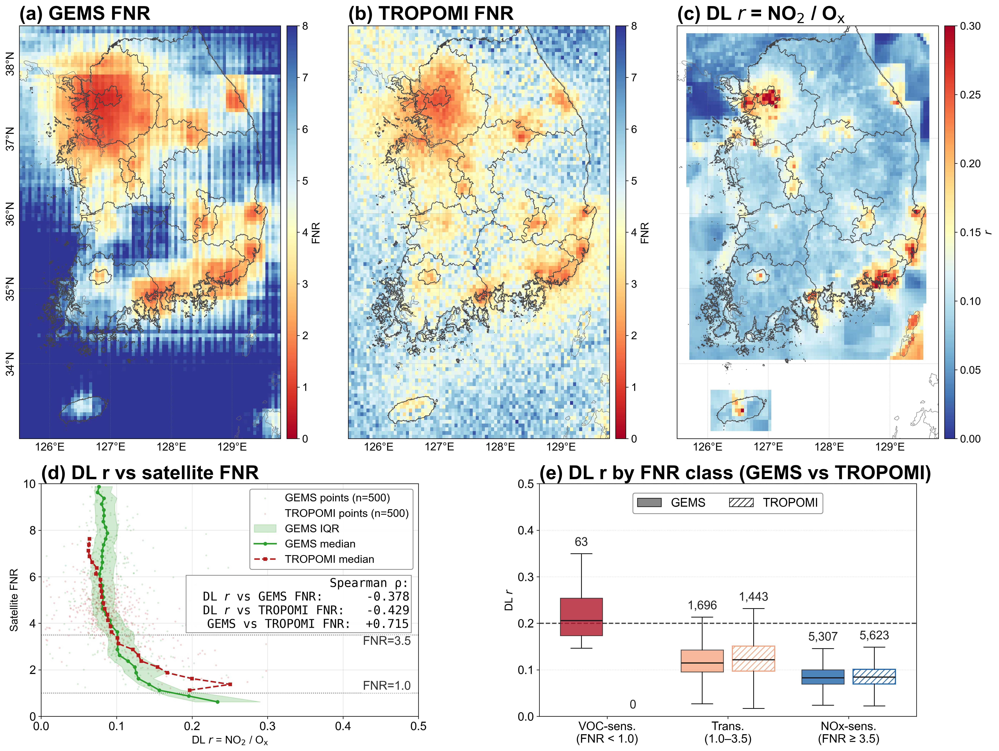
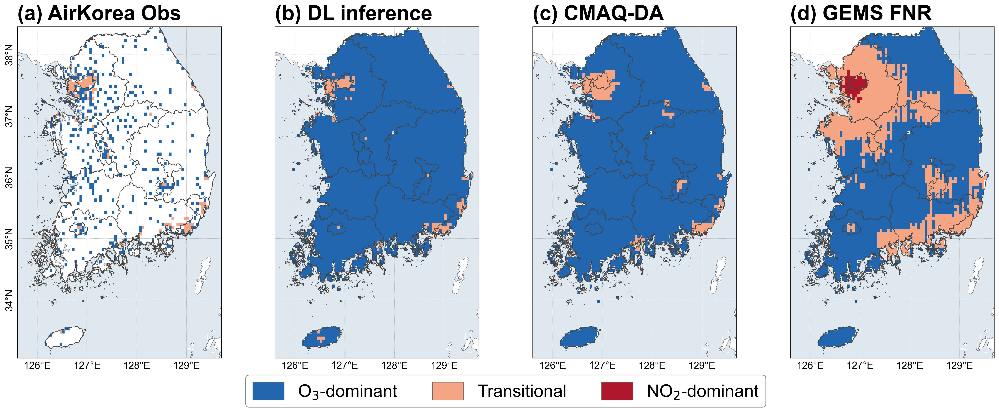
E2E관측 · E2E · CMAQ-DA · GEMS FNR 의 산화제 분배 3분류
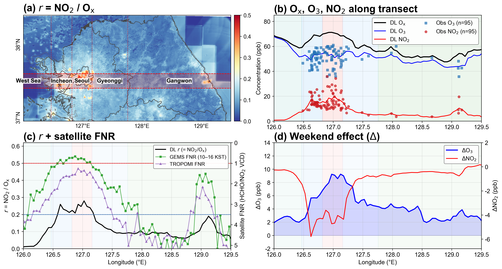
E2E37.4–37.6°N 서해–인천–서울–경기–강원
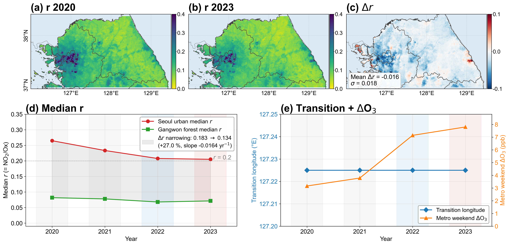
E2E2022 학습 모델의 2020–2023 후향 적용 · 북부 1 km
| End-to-End | Two-Stage | |
|---|---|---|
| 관측 밀도 | 밀집 — 도시 · 대도시권 | 희소 — 산악 · 해안 · 비도시 |
| 분석 목적 | 국지 hotspot 고해상 재현 | 전국 균일 재분석 · 광역 패턴 |
| 물리 사전정보 | 약함 — 유연성 극대화 | 강함 — 물리적 안전망 |
| 해석 가능성 | 낮음 — α–δ 식별불가능 | 높음 — 배경장–잔차 명시 분리 |
정필수1), 윤희영2)
1)(주)건화 환경평가부 · 2)안양대학교 환경에너지공학과
연락처pala77@empas.com
사사 이 성과는 정부(기후에너지환경부)의 재원으로 한국환경산업기술원의 미세먼지관리 특성화대학원 사업의 지원을 받아 수행된 연구임.
| 잠재 공간 융합 · End-to-End | 명시적 스케일 분해 · Two-Stage | |
|---|---|---|
| 공통 목표 | CMAQ-DA 없이 공개 자료만으로 1 km 농도장 추론 | |
| 기본 관점 | 다중 출처 특징의 잠재 표현 내 공동 결합 | 광역 배경 추정 · 국지 보정의 단계적 역할 분리 |
| 주요 구조 | 5 km 보간 공개 자료 직접 입력 + 측정소 · 1 km 격자 · 5 km 권역 3계층 이종 그래프 | 5 km 보간 공개 자료 → U-Net 배경장 + 측정소 · 1 km 격자 · 5 km 권역 3계층 이종 그래프 |
| 최적화 | 최종 관측 손실 기반 end-to-end 공동 학습 | Stage 1 학습 · 동결 → Stage 2 학습 |
| 배경 정보 경로 | 잠재 특징 + GEOS-CF 미정규화 농도 선형 보정(α·c + β) | 동결 Stage 1 배경장 z_LF 선형 보정(α·c + β) + 잔차 경로 입력 |
| 기대 효과 | 배경 · 국지 정보 상호작용의 자유로운 학습, 관측 조건에 따른 정보 비중 적응 | 희소 관측에서 역할 중복 억제, 무관측 지역의 배경장 하한, CMAQ-DA 지식의 학습 시 전이 |
| 농도 계산식 | ŷ = softplus(α · CCTM + β + δ)CCTM GEOS-CF 7물질, δ GNN 잔차 | ŷ = softplus(α · ŷLF1km + β + ΔŷHF)ŷLF1km Stage 1 배경장 상향보간, ΔŷHF 1 km 잔차 |
| 손실 함수 | L = L(node)station + 0.5 Lgrid + w(e) · Lemis(node) 측정소 노드 예측, Lgrid 측정소 위치 격자, w(e) = min(1, e/5) | Stage 1 L = LCMAQ-DA + 0.1 L(grid)stationStage 2 L = L(grid)station + 0.002 LΔsmooth + 2.0 w(e) · Lemis(grid) 측정소 위치 격자 예측 |
| 물질 | RMSE 단위 | 시간 독립 · 2023 · 전국 664곳 — 관측 입력 포함 | 공간 홀드아웃 R² · 2023 · 군집 5-fold — 관측 차단 | ||||||||
|---|---|---|---|---|---|---|---|---|---|---|---|
| R² | RMSE | 북부 | 중부 | 남부 | |||||||
| E2E | Two-Stage | E2E | Two-Stage | E2E | Two-Stage | E2E | Two-Stage | E2E | Two-Stage | ||
| PM₂.₅ | μg/m³ | 0.855 | 0.895 | 5.38 | 4.60 | 0.530 | 0.735 | 0.439 | 0.580 | 0.641 | 0.662 |
| PM₁₀ | μg/m³ | 0.905 | 0.907 | 7.70 | 7.64 | 0.541 | 0.700 | 0.472 | 0.512 | 0.634 | 0.644 |
| NO₂ | ppb | 0.886 | 0.886 | 3.94 | 3.83 | 0.647 | 0.756 | 0.600 | 0.664 | 0.584 | 0.665 |
| O₃ | ppb | 0.931 | 0.926 | 5.09 | 5.27 | 0.676 | 0.806 | 0.635 | 0.735 | 0.655 | 0.721 |
| NO | ppb | 0.841 | 0.843 | 4.84 | 4.52 | 0.551 | 0.679 | 0.472 | 0.551 | 0.453 | 0.605 |
| 5종 평균 | 0.884 | 0.891 | — | — | 0.589 | 0.735 | 0.523 | 0.608 | 0.593 | 0.659 | |
통계 검증은 측정망이 있는 공간에서만 가능 → 측정망이 없는 관측 희소 공간은 기대되는 대기화학 패턴과의 부합(정성 지표)과 위성 · 재분석 외부 자료로 교차 검증 — 다수 지표의 방향성 수렴으로 판정
| 계층 | 검증 | 지표 | 판정 원리 | 쪽 |
|---|---|---|---|---|
| 통계 직접 검증측정망이 있는 공간 | 시간 독립 검증 | 2022 학습 → 2023 · 측정소 R² · RMSE 5종 | 시간 일반화 | 13 · 14 · 부록 3 |
| 5-fold 공간 홀드아웃 | 2023 · 가린 측정소 R² · RMSE · 내륙 3개 도메인 | 관측 차단 위치의 공간 일반화 | 13–15 · 부록 3 | |
| Split-conformal 예측구간 | 2023 상반기 보정 → 하반기 · PICP · MPIW | 불확실성 · 환경기준 초과 판정 | — | |
| Stage 1 CMAQ-DA 에뮬레이션 | 5 km 연평균 공간 Pearson r · NMB | 교사장 재현 품질(독립 검증 아님) | — | |
| 대기화학 정합성측정망이 없는 1 km 전역 | Ox 보존 | 토지피복별 CV(Ox) / CV(O₃) | 광화학 정상상태(NO–O₃–NO₂) | — |
| NOx–Ox 회귀 | 토지피복 × 계절 기울기 · 절편 | 산화제 생성 · 적정 구조 · 배경 Ox | — | |
| 주말효과 | JJA 주간 주말 − 주중 ΔO₃ · ΔNO₂ | NOx 감축 자연실험 · 적정 포화 | 16 | |
| 도시–산림 O₃ 시간 구조 | 일변화 · 월변화 진폭 · 위상 | 환경별 시간 역학 | — | |
| PM fine fraction | PM₂.₅/PM₁₀ 공간 · 계절 분포 | 에어로졸 입경 구조 | — | |
| 1 km 산화제 분배 · r–NO 4분면 | r = NO₂/Ox 3분류 · 토지피복별 분면 | 분배 구조 · 도시–산림 전이 | 18 | |
| 동서 횡단면 | 37.4–37.6°N r · Ox · FNR 프로파일 | 화학적 전이 경계의 1 km 특정 | 22 | |
| 연도 간 재현성 | 2020–2023 후향 적용 · 전이 경도 · 중위 r | 반복적 대기화학 구조 | 23 | |
| 외부 자료 교차 검증위성 · 재분석 · 에피소드 | 이중 위성 FNR | GEMS · TROPOMI FNR ↔ r Spearman ρ | 민감도 체제 공간 순서의 방향적 일관성 | 17 · 19–20 |
| 4개 자료 3분류 일치 | 관측 · E2E · CMAQ-DA · GEMS FNR | 분배 분류의 수렴적 타당성 | 21 | |
| CMAQ-DA 9 km 비교 | 9 km 블록 평균 공간 R² · 편차 | 독립 외부 참조(E2E 기준) | — | |
| 산불 고농도 에피소드 | 2022 강릉 · 울진 — GEMS L4 PM₂.₅ · 측정소 시계열 | 국지 고강도 배출원의 시공간 추적 | — |
전 측정소 곳 — 관측 r 과의 순위 상관 1 km 화소 · CTM 원 격자점, 그 관측이 입력에 들어간 자리(상한)
가린 측정소 곳 — 관측 r 과의 순위 상관 · (평균 절대 오차) 북부 5-fold 추론 단계 가림(14쪽과 같은 조건), 같은 측정소
선험GEMS NO₂ · HCHO 의 AMF 선험 = GEOS-Chem → GEOS-CF 와 모델 계보 공유, GEOS-CF > CMAQ-DA 는 GEMS 에서만(−0.89 vs −0.79)
문헌Kwon 2019 Atmos. Meas. Tech. · Lee 2024 Atmos. Chem. Phys. · Oak 2024 Atmos. Meas. Tech. · Lange 2024 Atmos. Meas. Tech. · Lee 2026 Atmospheric Environment
⟳ 가로로 돌리면 크게 보입니다 · 좌우로 밀어 넘기기